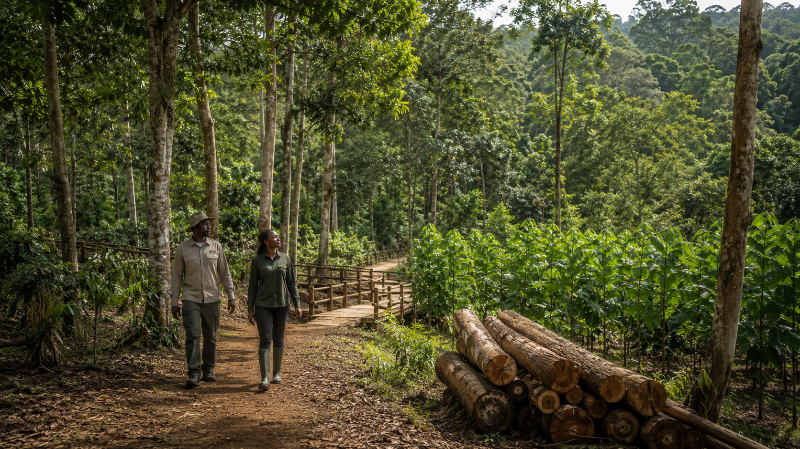
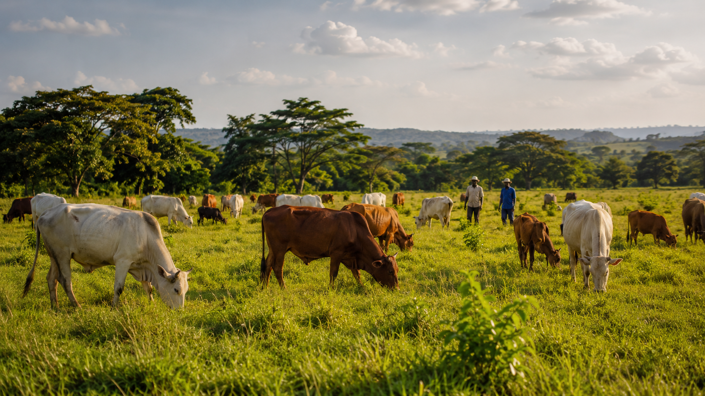
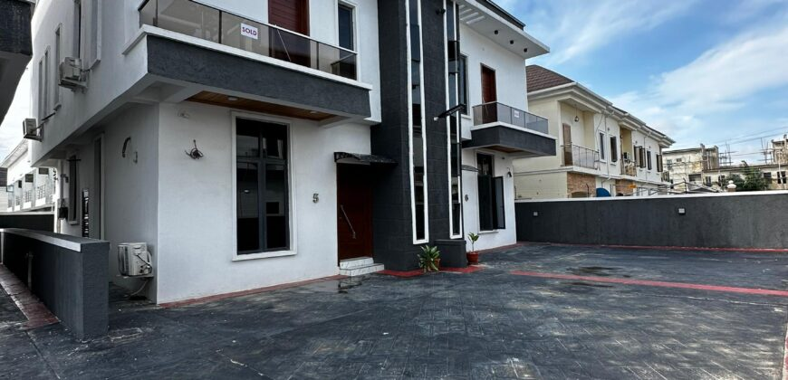
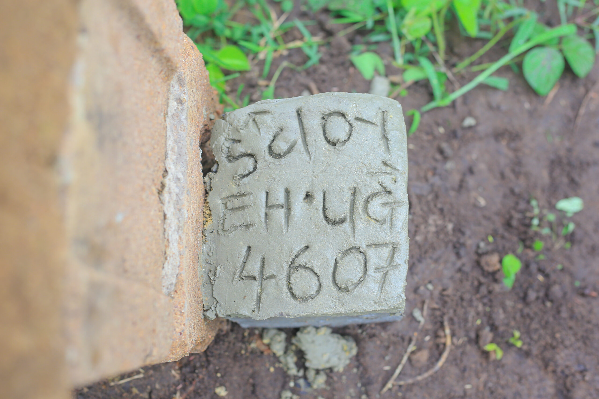
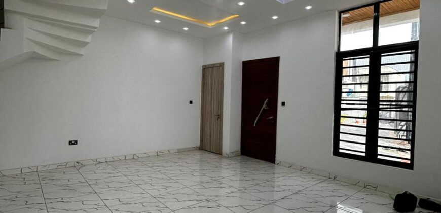

Regenerate before we extract.
Forestry and farming decisions begin with the long-term health of the soil, trees, water, and habitat around them.
Land, thoughtfully developed
Sustainable forestry, responsible cattle rearing, farm-fresh markets, and quality homes—all shaped by one long-term vision for the land.

One Living System
We connect forestry, responsible agriculture, local markets, and thoughtful development so each part of the land can support the next.


Our Story
Sustainable practices, quality products, and serene living.
We steward land as one connected system—growing trees and food responsibly, raising healthy cattle, bringing produce closer to families, and creating homes that respect the landscape.
What We Do
One philosophy, applied to soil, timber, livestock, and the homes people build on it.

Sustainable practice from planting to harvest, so our forests keep thriving for generations — whether you're after high-quality timber or an eco-tourism experience.

Traditional practice, modern technique — organic beef and dairy from cattle raised in natural, stress-free conditions.

Properties that blend nature and comfort — from cozy homes nestled in greenery to spacious plots ready for your dream project.
View listings →
A modern, eco-conscious farm-to-table space — crisp vegetables, fresh meat and dairy, all locally grown and ethically sourced.
On the Land


What We Stand On
Resources managed for lasting value.
Better methods for land and homes.
Local participation, shared progress.
Biodiversity protected in every project.
Knowledge for sound land decisions.
Clear, honest relationships.
Exploreland Homes
A selection of current Lagos listings. Confirm availability before visiting.

₦80,000,000Abraham Adesanya, Ajah, Lagos
 ₦65,000,000
₦65,000,000Abraham Adesanya, Ajah, Lagos
Leadership


Client Stories
Perspectives from people who have experienced our approach to responsible land, property, and long-term value.
“Their dedication to eco-friendly initiatives is evident throughout the operation. Our property investment gave us a tranquil living space while supporting genuine environmental stewardship.”
“ExploreLand changed our perspective on real estate and forestry. The property combines a serene landscape with quality facilities and a real commitment to sustainability.”
“The blend of natural beauty and modern amenities demonstrates how responsible development can support comfortable living and environmental conservation together.”
From the Field
33+ practical guides on soil, trees, and the business of land.
Let's Talk Land
Property, produce, or land—tell us what you need.